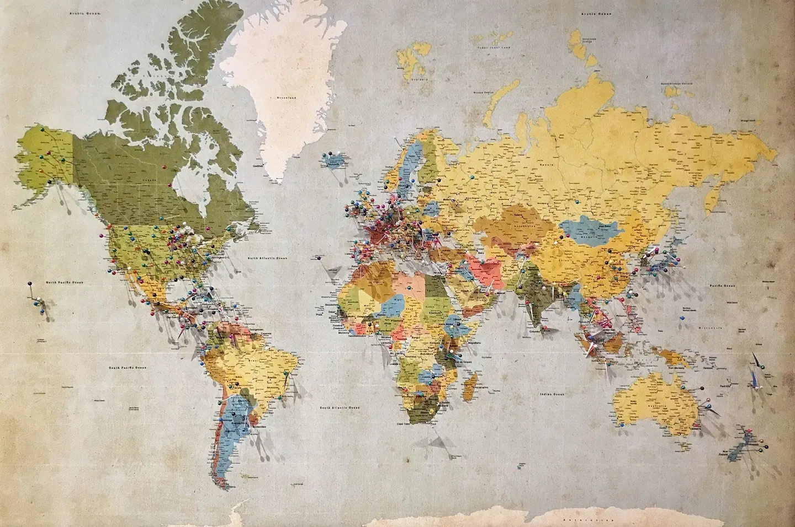

Chargement des indicateurs
Les statistiques seront calculées à partir des données validées dès que Supabase répondra.
Calculer les indicateurs depuis les lignes validées, sans aucun chiffre saisi à la main.

Vérification de la connexion Supabase en cours.
Les statistiques seront calculées à partir des données validées dès que Supabase répondra.
L'observatoire doit inspirer confiance : sourcés identifiees, statut de validation, données sensibles protégées, filtres utiles et indicateurs datés. Les cartes prévues servent d'aide a la décision, pas de vitrine de chiffres inventés.
Un ordre de grandeur national qui justifie une méthode de repérage, de qualification et d'accompagnement local.
Le sujet est déjà porté par de nombreux territoires, avec un besoin d'outils simples et de coopération de proximité.
Le recyclage foncier est un levier national de revitalisation, souvent porté par des collectivités et acteurs publics.
Ce repère illustre l'échelle des espaces à transformer sans artificialiser davantage les sols.
Sources publiques de contexte : Zéro Logement Vacant pour la vacance résidentielle et l'outillage des collectivités ; Cartofriches - Cerema pour le repérage et le recyclage des friches. Ces repères ne sont pas des résultats de Territoires Vivants France.
Les témoignages ne doivent pas être inventés. Ils seront publiés uniquement après accord explicite et vérification du contexte.
Les chiffres propres à Territoires Vivants France doivent rester à zéro ou en attente tant que les signalements, projets, matériaux, bénévoles et territoires ne sont pas enregistrés puis validés dans Supabase. Cette page est prête à accueillir des indicateurs réels, datés et vérifiables.
Un observatoire credible ne se limite pas à afficher des points sur une carte. Il doit expliquer d'ou viennent les données, comment elles sont vérifiées, qui peut les consulter, quelles informations restent confidentielles et comment les indicateurs aident à prioriser les actions.
Pour TVF, l'observatoire est le cœur méthodologique de la plateforme : il relie logements vacants, commerces fermés, friches, matériaux disponibles, antennes locales, projets et indicateurs sociaux. Cette approche évite de traiter les sujets separement alors qu'ils se renforcent sur le terrain.
Chaque fiche doit avoir une source, une date, une commune, un statut de validation, un niveau de diffusion et des limites clairement identifiees.
Les adresses sensibles, contacts et photos ne doivent pas être publics tant que leur publication n’est pas legitime et sécurisée.
Une carte utile aide à choisir les rues, biens, locaux, friches ou gisements de matériaux à vérifier en premier.
La carte doit pouvoir afficher des couches distinctes, filtrables par type de bien, commune, territoire, statut et source.
Les indicateurs doivent venir de la base, sans chiffres fictifs, avec distinction entre signale, qualifié, valide et réalisé.
Chaque territoire pourra regrouper diagnostic, priorités, besoins, ressources, acteurs et actions en cours.
L’Observatoire TVF doit devenir une interface de compréhension, pas seulement une carte. Les données nationales donnent des ordres de grandeur, mais les décisions se prennent à l’échelle d’une commune, d’un quartier, d’un îlot, d’un propriétaire et d’un usage possible. La crédibilité dépend donc de la traçabilité : source, date, territoire, méthode, statut de validation.
Les chiffres nationaux montrent l’ampleur des ressources inutilisées. Mais ils masquent de fortes différences entre métropoles, villes moyennes, bourgs ruraux, littoraux, bassins industriels et outre-mer.
TVF doit transformer les données en décisions : quel bien vérifier, quel propriétaire contacter, quel usage tester, quel financement rechercher, quel acteur local mobiliser.
Parce qu’un signalement peut être incomplet, sensible ou inexact. La modération protège les personnes et la crédibilité de l’observatoire.
Les sources publiques et traçables : INSEE, Cerema, Cartofriches, Zéro Logement Vacant, ANCT, SDES, collectivités et données validées TVF.
Chaque donnée doit disposer d’un identifiant, d’un statut, d’une source, d’une date, d’une localisation et d’un niveau de diffusion.